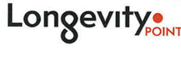

Trade Mark Journal No.2025/013 28 March 2025
UK00004172951 13 March 2025 (3,5,41,44)

International priority date claimed: 16 October 2024
(Italy)
(302024000153360)
- Class 3
- Perfumes; essential oils; Cosmetics; Cosmetic preparations for skin care and hair care; Soap; Bar Soap; Dermatological creams [other than medicated]; Washing creams; Cleaning preparations for personal use; Dentifrices; Tooth care preparations; Sun care preparations; Skin care oils [cosmetic]; Antiperspirants [toiletries]; After-sun preparations for cosmetic use; Cleansers for intimate personal hygiene purposes, non-medicated.
- Class 5
- Pharmaceutical preparations for skin care; Medicated hair care preparations; Skin care preparations for medical use; hair care preparations for medical purposes; nutritional supplements; Medicated mouthwash; Medicated skin creams.
- Class 41
- Education; training; entertainment; sports and cultural; Medical, cosmetic and pharmaceutical training services; Management of sports facilities; Organization of tournaments; Organization of conferences; Organization of competitions; Organization of competitions; Organization of games; Organization of sports events; Organization of sports activities; Organization of sports competitions; Services related to education, entertainment and sports; Management of sports facilities; Provision of facilities skiing.
- Class 44
- Pharmacy counseling services; therapeutic aesthetic services; plastic and cosmetic surgery; aesthetic treatments; services related to medical treatments; services provided by medical-aesthetic centers; Hygiene and beauty care for people; cosmetic treatments; medical treatment services provided by spa centers; aesthetic services provided by spa centers; health services; Personal wellness counseling in the areas of aesthetics, health, and nutrition; Counseling and personalized check-up services in the areas of aesthetics, health, and nutrition.
Unifarco S.p.A.
Representative: Perani & Partners S.p.A. c/o Shepherd and Wedderburn LLP